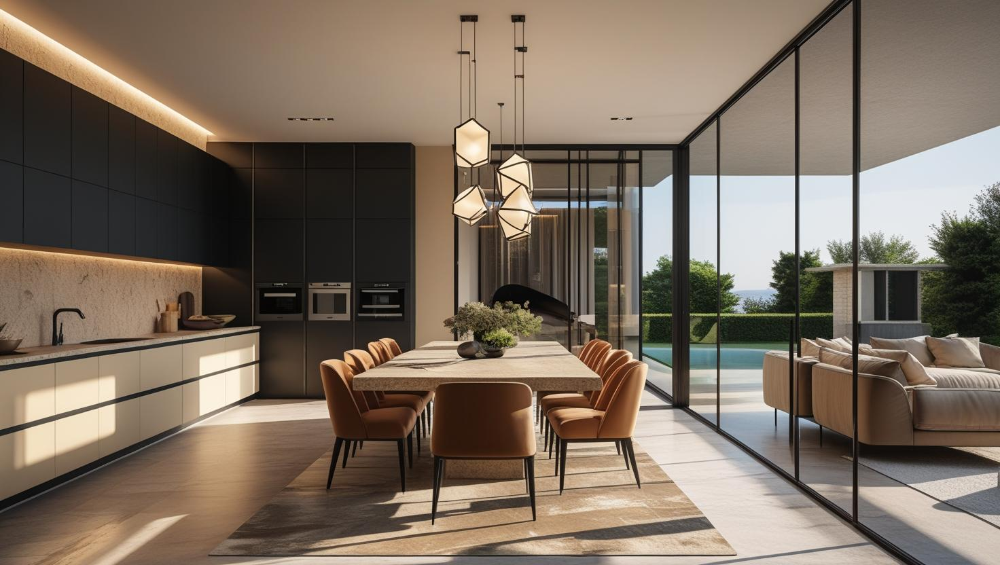
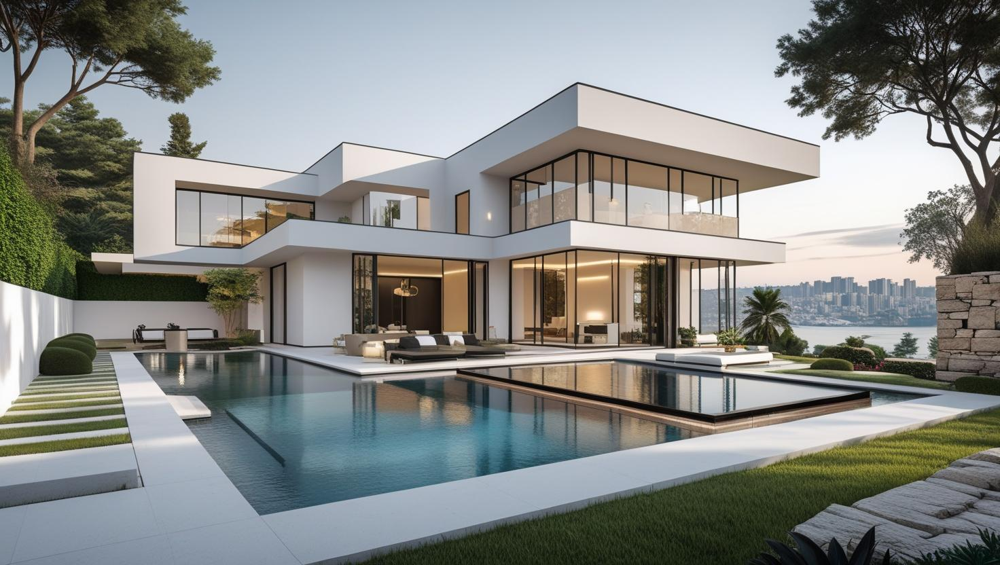
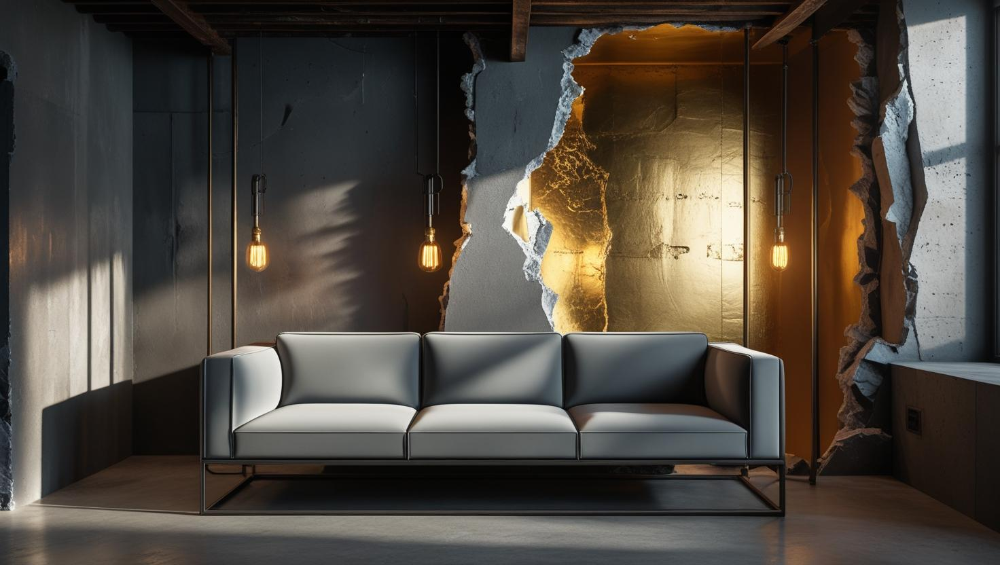

Tarabya'nın Tercihi Profesyonel Boyacı Ustası
Daire, villa, konak ve iş yerleriniz için Tarabya'nın dokusuna saygılı, titiz ve kaliteli boya badana hizmetleri sunuyoruz.
Tarabya'da Boya Badana: Sahil Konutları ve Yamaç Adresler
Tarabya boyacı talebi Sarıyer'e bağlı bu semtin sahil ve yamaç ikiliğinden şekilleniyor. Kıyı hattında yerleşik apartman ve konut stoğu, yamaçta ise müstakil ev ve villa dokusu bulunuyor.
Suya yakınlık ve rüzgâr yükü, dış cephede yüzey hazırlığını iç cepheye göre daha belirleyici hale getiriyor. İç mekânda ise kuzeye bakan ve dış duvara sırtını veren odalarda yoğuşma eğilimi artıyor; bu odalarda astar seçimi boyanın ömrünü belirliyor.
Yamaç adreslerde araç yanaşma ve malzeme taşıma işin planına giriyor. Tarabya boya ustası keşfinde kapsamı bir bütün olarak değerlendiriyoruz.
Tarabya'daki Konutlar İçin Boya Hizmetlerimiz

Daire & Apartman Boyama
Modern veya klasik, Tarabya'daki dairenizin karakterine uygun renklerle, temiz ve profesyonel hizmet.
- Geniş pencere ve doğrama kenarlarında dikkatli maskeleme
- Nem gören odalar için uygun astar ve boya seçimi
- Kaliteli, kokusuz boya seçenekleri
- Randevulu çalışma düzeni ve temiz teslim

Villa & Konak Boyama
Villanızın veya konağınızın hem iç hem dış cephesini, estetik ve koruyucu özellikli premium boyalarla yeniliyoruz.
- İç ve dış cephe komple boyama
- Ahşap ve taş yüzeylere özel uygulama
- Geniş alan ve yüksek tavan uzmanlığı
- Proje yönetimi ve danışmanlık

Dekoratif Boya & Sanatsal Dokunuşlar
Mekanlarınıza özel bir kimlik kazandırmak için İtalyan boya ve modern doku efektleri uyguluyoruz.
- İtalyan dekoratif boya uygulamaları
- Brüt beton ve eskitme efektleri
- Mekana özel konsept ve renk tasarımı
- Varak, desen ve sanatsal çalışmalar
Neden Tarabya'da Bizimle Çalışmalısınız?
Bölge Tecrübesi
Tarabya ve tüm Boğaz hattındaki yapıların ihtiyaçlarına hakim, tecrübeli ekip
Titiz İşçilik
Konak ve villalarda pervaz, korkuluk ve kapı gibi detayları duvarlarla aynı özenle, ayrı ayrı ele alırız
Premium Malzemeler
Yapınıza değer katan, en iyi ve en dayanıklı markaları kullanırız
Yüksek Gizlilik & Güven
Müşteri mahremiyetine ve evinizin huzuruna en üst düzeyde önem veririz
Çevreye & Peyzaja Özen
Çalışma sırasında bahçenize ve peyzajınıza maksimum hassasiyet gösteririz
Memnuniyet odaklı hizmet
Tarabya'daki seçkin referanslarımız, kalitemizin en büyük kanıtıdır
Tarabya Boyacı Ustası: Değerli Mekanlarınız İçin Profesyonel Çözümler
Boğaziçi'nin en seçkin semtlerinden biri olan Tarabya'da boyacı ustası hizmeti, basit bir yenileme işleminden çok daha fazlasını, mülkünüze duyulan saygıyı ve profesyonel bir dokunuşu ifade eder. Biz, İstanbul Boyacılık olarak, bu özel bölgenin modern dairelerinden, tarihi konaklarına ve prestijli villalarına kadar her yapıya hak ettiği değeri veriyoruz. Tarabya villa boyama veya Tarabya daire boyama konusundaki tecrübemiz, doğru malzeme bilgimiz ve hassas işçiliğimizle, mekanlarınızı sadece boyamıyor, onların karakterini ve değerini artırıyoruz.
Tarabya boya ustası ekibimiz, sahil hattındaki ev boyama işlerinde deniz nemine dayanıklı yüzey hazırlığı uygular; koru içindeki konutlarda ve ofis boyama projelerinde mahremiyetinize özen gösteren randevulu bir çalışma düzeni kurar. İstanbul'un diğer bölgelerindeki projeleriniz için İstanbul boyacı ustası hizmetleri sayfamıza göz atabilirsiniz.
Tarabya ve Boğaz Hattında Hizmet Bölgelerimiz
Tarabya boyacı ustası olarak, Boğaziçi'nin Avrupa Yakası'ndaki tüm sahil semtlerine hizmet veriyoruz:
Hizmet Verdiğimiz Yakın Bölgeler
- Tarabya
- Yeniköy
- İstinye
- Kireçburnu
- Büyükdere
- Sarıyer Merkez
- Ferahevler
- Maslak
- Rumeli Hisarı
- Baltalimanı
- Emirgan
- Rumeli Kavağı
Faydalı Bağlantılar
Tarabya bölgesinde premium iç cephe veya dekoratif boya planlıyorsanız fiyat, metrekare hesabı ve marka seçimi rehberlerini birlikte incelemek daha sağlıklı karar verir.
Fiyat nasıl belirleniyor? Tarabya'daki işler için burada bir rakam yer almıyor. Bir cephenin rüzgâr ve tuzdan ne kadar etkilendiği ya da iç duvarlarda nem izi olup olmadığı yerinde görülmeden kapsam doğru belirlenemiyor. Teklifimizi ölçülen yüzey, hazırlık ve onarım miktarı, astar ve kat sayısı, iç ve dış mekân için seçilen ürün, erişim ve eşya durumu üzerinden yazılı olarak hazırlıyoruz; keşif için sizden ücret istemiyoruz.
Tarabya'da kapsamı büyüten kalemler dış cephe işinin devreye girmesi, suya bakan cephelerde çıkan hazırlık işi ve yamaç adreslerde malzeme taşıma.
Nem alan odalar için hangi boya türünün daha uygun olduğunu merak ediyorsanız plastik boya mı silikonlu boya mı yazısı iki seçeneği yan yana koyuyor. Konutta oda sayısına göre tutar aralıklarını 2026 ev boyama fiyatları yazısı gösteriyor; Sarıyer ve Boğaz hattı dışındaki bölgelerde de keşfe çıkıyoruz, liste İstanbul boyacı hizmet bölgeleri sayfasında.
Sıkça Sorulan Sorular
Tarabya'da ev yenilemesi, banyo ve denize bakan odalarda boya planına dair sorular
Boyayı yenilemenin son işlerinden biri olarak planlamanızı öneriyoruz. Kırım, tesisat, elektrik ve fayans gibi toz ya da darbe riski taşıyan işler bitmeden sürülen boya kirleniyor veya zarar görüyor. Biz işin boya ile alçı ve sıva tamiri kısmını üstleniyoruz; diğer kalemler tamamlanmaya yakın keşfe gelip boyanacak yüzeyi ölçüyoruz.
Banyoda buhar ve yoğuşma sık olduğu için neme ve küfe dayanıklı üretilmiş iç cephe ürünleri tercih ediliyor; tavanda küf izi varsa önce temizleniyor, ardından uygun astar sürülüyor. Havalandırması zayıf banyolarda doğru ürün bile tek başına yetmediğinden keşifte aspiratör ve pencere durumunu da not ediyoruz.
Geniş pencereden giren ve sudan yansıyan ışık gün içinde değiştiği için kartelada seçilen renk duvarda daha soğuk ya da daha parlak görünebiliyor. Karar vermeden önce renk örneğini birkaç farklı duvara küçük alanlar halinde sürüp sabah ve akşam ışığında bakmanızı öneriyoruz. Güçlü ışık alan duvarlarda mat ya da ipek mat bitiş, parlak yüzeye göre yansımayı azaltıyor.
Yalının büyüklüğüne, ahşap yüzeylerin mevcut durumuna (raspa, zımpara ihtiyacı), ve hava koşullarına bağlı olarak 1 ila 3 hafta arasında değişebilir. Detaylı keşif sonrası net bir iş planı sunuyoruz.
Denize bakan cephede boya neden daha çabuk yıpranıyor?
Tuzlu nem, rüzgâr ve doğrudan güneş dış yüzeydeki katmanı iç bölgelere göre daha hızlı yoruyor. Belirleyici olan boyanın markası değil, yüzey hazırlığının doğru yapılması ve dış mekâna uygun bir sistem kullanılması.
İç cephede nem lekesi için ne yapılıyor?
Önce kaynağı ayırt ediyoruz: yoğuşma mı, dışarıdan su alma mı. Kaynak dururken uygulanan boya kısa sürede kabarıyor. Keşifte değerlendirip önce çözülmesi gerekeni söylüyoruz.
Yamaçtaki eve malzeme taşımak işi uzatır mı?
Araç yanaşamayan adreslerde taşıma süresi uzuyor ve gün sayısına yansıyor. Keşifte adresi görüp planı buna göre kuruyoruz.
Tarabya Müşteri Yorumları
"Tarabya'daki konağımızın dış cephe bakımı için anlaştık. Deniz nemine karşı kullandıkları özel koruyucular ve titiz işçilikleri sayesinde evimiz ilk günkü zarafetine kavuştu."
Hakan Erez
Tarabya / İstanbul
"Villamızın iç mekanını yenilemek için tavsiye üzerine ulaştık. Mahremiyetimize gösterdikleri saygı, eşyalarımızı ve bahçemizi korumadaki titizlikleri mükemmeldi. Gönül rahatlığıyla evinizi emanet edebilirsiniz."
Elif Aydın
Tarabya / İstanbul
"Sahildeki restoranımızın iç ve dış mekanını, sezon öncesi hızlıca yenilemeleri gerekiyordu. Planlamaları sayesinde işimiz aksamadan, tam zamanında ve harika bir sonuçla mekanı teslim ettiler."
Ali Kaptan - Restoran İşletmecisi
Kireçburnu / İstanbul
İletişim
İletişim Bilgileri
Telefon: 0507 832 29 12
E-posta: boyaustamistanbul@gmail.com
10+ Uzman Ustamızla Tarabya ve tüm İstanbul'a hizmet veriyoruz.